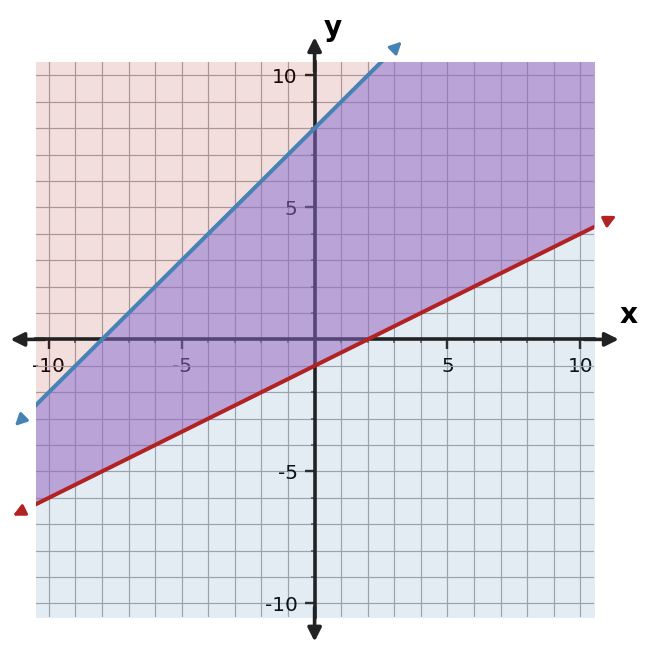
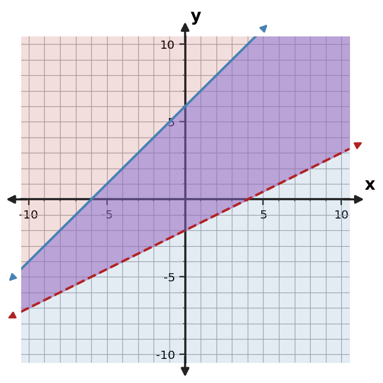

Algebra Practice 3.5 :::: Set 3
1. A workshop can make at most 18 stools and tables in total and must make at least 4 tables. Let $x$ be stools and $y$ be tables. Write a system of inequalities, including nonnegativity.
2. How can substitution verify that a point selected from a graph is truly feasible?
3. Use the graph to describe the feasible region of the system. Give one point that appears feasible.

4. Determine whether $(0,2)$ is feasible for $y\le x+4$ and $y\ge -x$. Show both checks.
5. Use the graph to describe the feasible region of the system. Give one point that appears feasible.

6. Use the graph to describe the feasible region of the system. Give one point that appears feasible.

7. A group has a limit of 30 total items split between museum tickets and student tickets, and it needs at least 5 student tickets. Let $x$ be the number of museum tickets and $y$ the number of student tickets. Write a system of inequalities, including nonnegativity.
8. What is the difference between a solution to one inequality and a feasible solution to a system of inequalities?
9. Use the graph to describe the feasible region of the system. Give one point that appears feasible.

10. Determine whether $(5,13)$ is feasible for $y\le x+6$ and $y\ge -x+1$. Show both checks.
11. Use the table to identify points that satisfy both $y\le x+5$ and $y\ge -x+1$.
| Point | Constraint 1 | Constraint 2 | Feasible? |
|---|---|---|---|
| $(0,1)$ | Yes | Yes | Yes |
| $(1,3)$ | Yes | Yes | Yes |
| $(2,2)$ | Yes | Yes | Yes |
| $(4,5)$ | Yes | Yes | Yes |
12. Use the graph to describe the feasible region of the system. Give one point that appears feasible.

13. A workshop can make at most 26 basic packages and premium packages in total and must make at least 7 premium packages. Let $x$ be basic packages and $y$ be premium packages. Write a system of inequalities, including nonnegativity.
14. Why is a point that satisfies only one inequality not a solution of the whole system?
15. Use the graph to describe the feasible region of the system. Give one point that appears feasible.

16. Determine whether $(5,4)$ is feasible for $y\le x+7$ and $y\ge -x+1$. Show both checks.
17. Use the table to identify points that satisfy both $y\le x+6$ and $y\ge -x-1$.
| Point | Constraint 1 | Constraint 2 | Feasible |
|---|---|---|---|
| (0,-1) | Yes | Yes | Yes |
| (2,1) | Yes | Yes | Yes |
| (4,0) | Yes | Yes | Yes |
18. Use the graph to describe the feasible region of the system. Give one point that appears feasible.

19. A workshop can make at most 18 chairs in total and must make at least 7 of type $y$. Let $x$ and $y$ be the two types. Write a system of inequalities, including nonnegativity.
20. If two solution regions do not overlap, what does that mean about the system?
21. Use the graph to describe the feasible region of the system. Give one point that appears feasible.

22. Determine whether $(3,15)$ is feasible for $y\le x+10$ and $y\ge -x+4$. Show both checks.
23. Use the table to identify points that satisfy both $y\le x+8$ and $y\ge -x+4$.
| Point | Constraint 1 | Constraint 2 | Feasible |
|---|---|---|---|
| (0,2) | Yes | No | No |
| (2,5) | Yes | Yes | Yes |
| (4,13) | No | Yes | No |
24. Use the graph to describe the feasible region of the system. Give one point that appears feasible.
